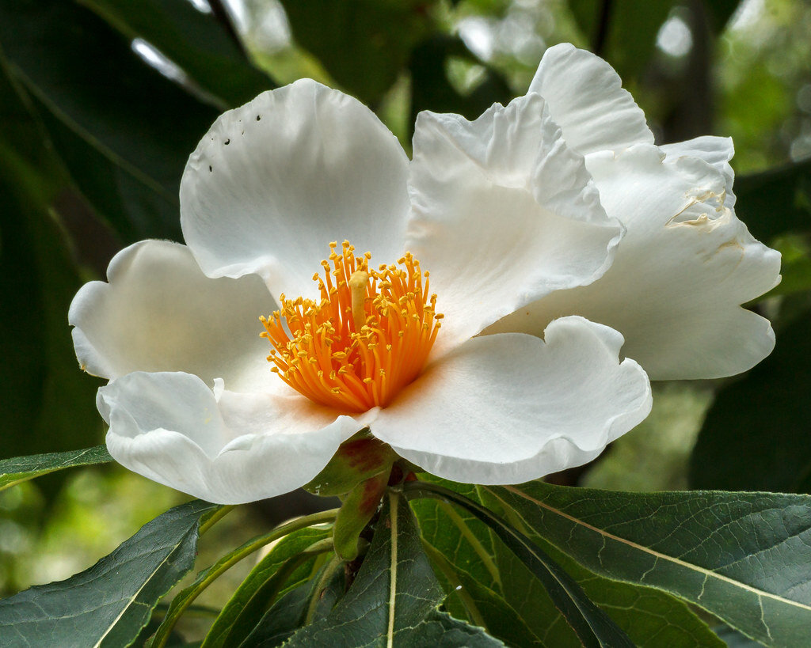
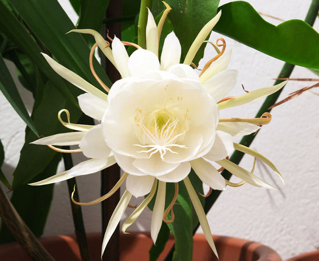

Franklinia,çay ailesi Theaceae'de yer alan monotipik bir cinstir.Bu cinsteki tek tür, Franklin
ağacı olarak adlandırılan ve Amerika Birleşik Devletleri'nin güneydoğusundaki Altamaha Nehri vadisine özgü çiçekli bir ağaçtır.
ağacı olarak adlandırılan ve Amerika Birleşik Devletleri'nin güneydoğusundaki Altamaha Nehri vadisine özgü çiçekli bir ağaçtır.

Dünya genelinde ise Asya ülkelerinde, Anadolu'dan sonra doğuya doğru İran, Afganistan, Pakistan ve Himalayalar'da yetişir.

EpiphyllumHollandalı pipo kaktüsü,gecenin prensesi veya gecenin kraliçesi olan bir kaktüs türüdür.Gece çiçek açar ve çiçekleri şafaktan önce solar.